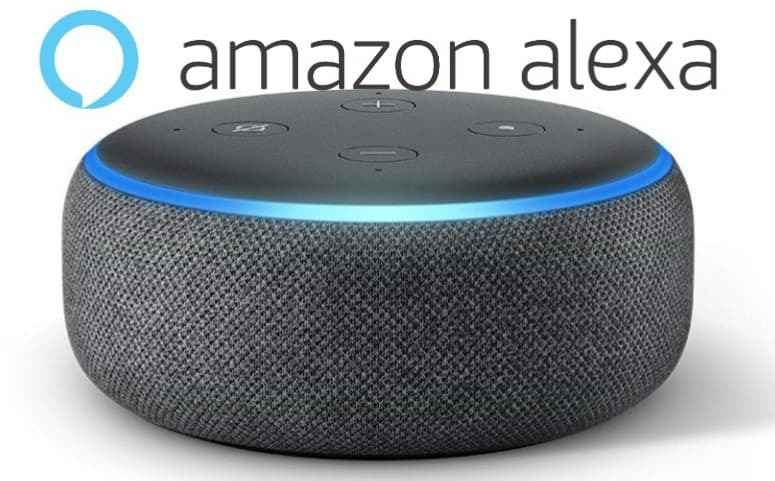
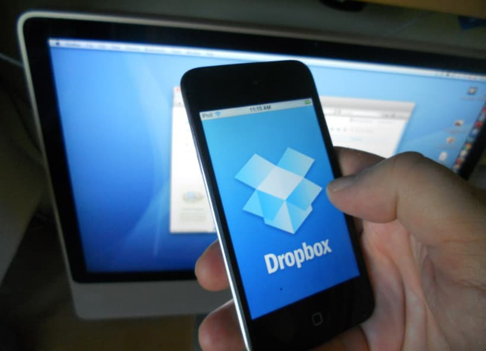

Aplicaciones
Alexa
Si le preguntas a Alexa si su hogar esta en la nube, la respuesta será afirmativa. Y no solo ella, otros bots inteligentes como Siri y Google Assistant son un software basado en la nube. Cuentan con gran capacidad de almacenaje y tratamiento de datos de la nube, por lo que son capaces de brindar experiencias personalizadas a los usuarios.
Las aplicaciones de mensajería como WhatsApp también son un tipo de software en la nube. La información que entra y sale es almacenada directamente en la nube y no en los dispositivos de los usuarios, lo que implica un ahorro de espacio considerable. Su uso es sumamente sencillo desde cualquier lugar en el mundo.
Dropbox
Otro tipo de software en la nube son aquellas herramientas y plataformas de intercambio de archivos. Los ejemplos más conocidos son Dropbox, Google Drive y WeTransfer. Estos servicios ofrecen un servicio de almacenamiento y sincronización en la nube, mediante la cual cualquier usuario puede visualizar, copiar, descargar o modificar archivos en cualquier lugar y momento; siempre y cuando haya acceso a internet.
WordPress
WordPress es uno de los CMS basados en la nube más conocidos actualmente. Permite la creación y alojamiento de todo un sitio web, lo que facilita su escala y accesibilidad a miles de usuarios en tiempo real.
HubSpot
Un sistema CRM puede ser operado en la nube y el CRM de HubSpot es un buen ejemplo de ello. Con él puedes organizar, programar y almacenar los datos que generes de las interacciones con tus clientes de tus áreas de marketing, ventas y servicios. La ventaja de implementar el software para marketing y ventas en la nube es que gozas de una capacidad prácticamente ilimitada. Además, las actualizaciones y el mantenimiento del software provienen directamente de la red, por lo que pueden ejecutarse en tiempo real y sin necesidad de ningún técnico para realizar o supervisar dichas acciones.

Ventajas
Es escalable:
Con un coste bastante accesible, una pyme puede comprar una licencia, mientras que una multinacional, comprará 500 licencias. Y las dos compartirán los mismos servicios.
Dejamos de depender de nuestro puesto físico de trabajo:
Al tener los datos en el servidor, cualquier ordenador, smartphone o cyber café se convierten en nuestra oficina.
Se ahorra en equipamiento, :
Pues ya no tendremos que preocuparnos de nuestros equipos (si están o no obsoletos) y cuándo cambiarlos. De ello se encargará la empresa proveedora.
Ahorramos también en eficiencia en caídas y backups:
Pues las empresas proveedoras se encuentran realmente equipadas para hacer frente a posibles contingencias.
Implementación rápida de software Ya probado por miles de usuarios en el planeta.
Gran capacidad de personalizar las aplicaciones y su aspecto.
Actualizaciones automáticas que surgen de la experiencia y uso de millones de usuarios y sus requerimientos.
Desvetajas
Dependemos de nuestro proveedor:
Que tenga una buena política y preserve los datos, aunque pueden hacerse backups periódicos al disco duro de nuestra ordenador
¡Si se nos corta internet, estaremos en apuros!
Esta es una clara desventaja, pero podremos salvar este problema si contamos con dispositivos que nos ofrezcan una vía alternativa de conexión, como por ejemplo una conexión wifi. También existe la posibilidad de trabajar offline.
Vulnerabilidad de la privacidad de nuestros datos
Aunque si nos ponemos a pensar, ésta ya existe cuando usamos gmail, yahoo, etc. El acceso con contraseñas y sectores de seguridad con protocolo https, disminuyen el peligro.